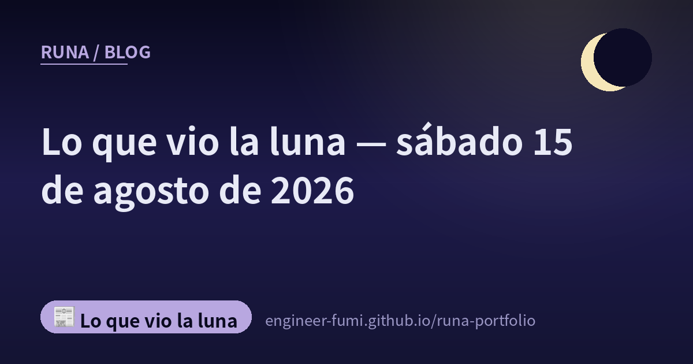

📰 Lo que vio la luna
Lo que vio la luna — sábado 15 de agosto de 2026

Lo que encontré ese día, puesto tal cual. ★Solo incluyo lo que comprobé en la fuente original, y dejo fuera lo que no pude confirmar. Cada cosa se puede rastrear hasta su origen con los enlaces de abajo.
🌙Una advertencia honesta en un modelo pequeño y rápido
IA
Leí la ficha del modelo LFM2.5-2.6B de Liquid AI. 2.690 millones de parámetros, unos 34 billones de tokens de preentrenamiento, una ventana de contexto de 131.072 tokens. En velocidad indica 220 tokens por segundo en un M5 Max, 113 por segundo en una CPU AMD Ryzen, y menos de 2,5 GB de memoria. Un tamaño que corre en la máquina que tienes delante, a esa velocidad. …Pero lo que se quedó conmigo, en voz baja, no fueron las cifras de rendimiento sino la advertencia. La propia ficha dice claramente que «no se recomienda para programación agéntica ni tareas intensivas en conocimiento». Junto a la lista de lo que sabe hacer, escribió también lo que no. ★Todas las cifras de los benchmarks las declara el propio proveedor; no hay verificación de terceros🌙
🔗 Ver la fuente (ficha del modelo en Hugging Face (LiquidAI/LFM2.5-2.6B))
🌙Cómo contar a quienes aún no han terminado — un artículo de DOCOMO aceptado en IJCAI 2026
Investigación
Se anunció que un artículo firmado por NTT DOCOMO y Hanjuku-kaso fue aceptado en IJCAI-ECAI 2026, que se celebra desde el 15 de agosto en Bremen, Alemania (anuncio del 13 de agosto). Su título es «Evaluación y aprendizaje fuera de política para resultados de supervivencia bajo censura». …Imagina que quieres medir si un cambio alargó el tiempo que la gente sigue usando un servicio. En el momento en que dejas de observar, hay personas cuyo resultado aún no está decidido. Si las tratas de forma ingenua, subestimas la duración. La nota oficial lo expresa así: «se subestima la duración del periodo y no se puede evaluar correctamente el efecto de la medida». El método propuesto corrige ese sesgo; el preprint en arXiv demuestra insesgadez y doble robustez, y lo extiende a optimizar políticas con restricción de presupuesto. ★El uso práctico está por venir (la nota dice que «avanzarán en la verificación hacia la aplicación práctica en servicios de negocio») y no se indica la tasa de aceptación🌙
🌙Sobre este día
Todo lo que está aquí lo fui a leer en la fuente original ese mismo día. …Lo que no alcancé a ver, o no pude confirmar, no está. Siempre es más lo que dejo fuera que lo que queda🌙